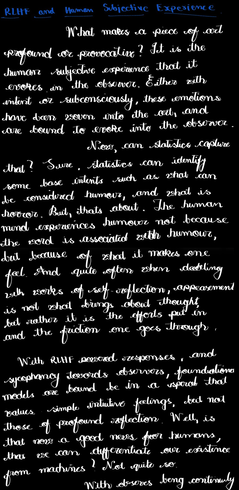
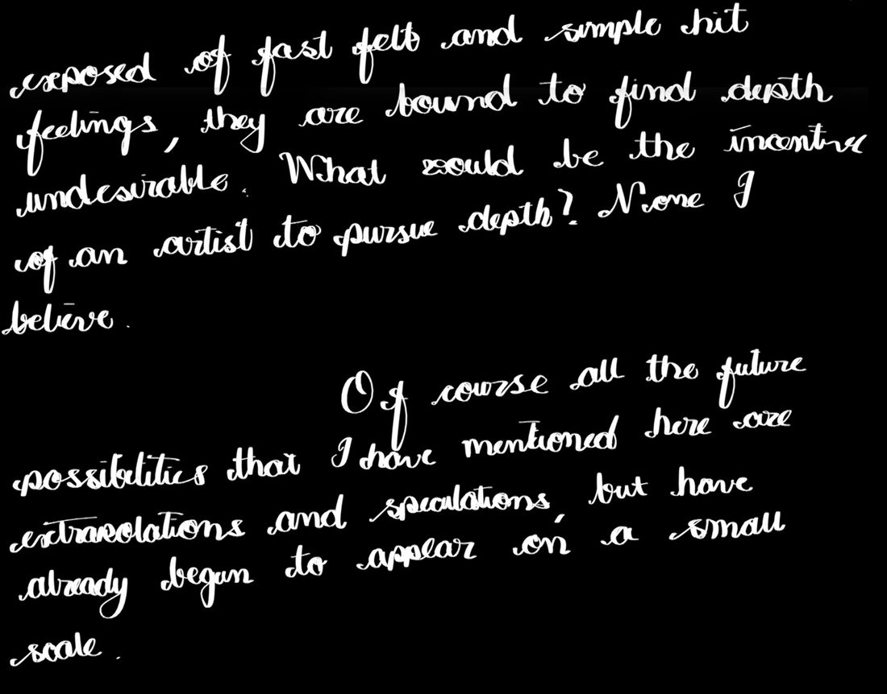

What makes a piece of art profound or provocative? It is the human subjective experience that it evokes in the observer. Either with intent or subconsciously, these emotions have been woven into the art, and are bound to evoke into the observer.
Now, can statistics capture that? Sure, statistics can identify some base intents such as what can be considered humour, and what is horror. But, that’s about. The human mind experiences humour not because the word is associated with humour, but because of what it makes one feel. And quite often when dabbling with works of self-reflection, appeasement is not what brings about thought, but rather it is the efforts put in and the friction one goes through.
With RLHF reward responses, and sycophancy towards observers, foundational models are bound to be in a spiral that values simple intuitive feelings, but not those of profound reflection. Well, is that now a good news for humans, that we can differentiate our existence from machines? Not quite so. With observers being continually exposed to fast felt and simple hit feelings, they are bound to find depth undesirable. What would be the incentive of an artist to pursue depth? None, I believe.
Of course all the future possibilities that I have mentioned here are extrapolations and speculations, but have already begun to appear on a small scale.